Every system starts with a signal.
Professional roles and collaborations — from technical support to national research internship.
Built, shipped, deployed.
Eight embedded and full-stack systems spanning agriculture, aquaculture, healthcare, security, and access control.
 LECTURER RESEARCH PROJECTSWARM
LECTURER RESEARCH PROJECTSWARMAutonomous IoT-based swarm aeration system developed as part of an IPB University lecturer research project. The system enables multiple ESP32-based aerator nodes to collaborate using distributed communication, adaptive scheduling, real-time monitoring, and Random Forest-based intelligence to improve aquaculture efficiency.
 HEALTHCARE AI • BRIN RESEARCH INTERNSHIPPLANTAR
HEALTHCARE AI • BRIN RESEARCH INTERNSHIPPLANTARResearch conducted during my internship at the National Research and Innovation Agency (BRIN), developing an intelligent plantar pressure monitoring platform using distributed FSR sensors, ESP32, IoT communication, and Center-of-Pressure analysis for gait assessment and rehabilitation.
 AGRICULTURE IOTFARMSHIELD
AGRICULTURE IOTFARMSHIELDSensor-driven crop protection system that watches field conditions and flags threats before they spread.
 AUTOMATIONCHOP-X
AUTOMATIONCHOP-XEmbedded automation unit built to cut manual labor time on a repetitive processing task.
 SECURITYSENTRY
SECURITYSENTRYSENTRY is an automatic door system that uses computer vision to recognize authorized individuals and grant access without physical contact. A camera continuously scans the entry point, and when it detects a registered face or approved credential, an ESP32-controlled actuator triggers the door to unlock and open in real time — while unrecognized attempts are flagged and logged for security monitoring.
 ACCESS CONTROLDOOR/LOCK
ACCESS CONTROLDOOR/LOCKKeyless entry system with authenticated access logs and remote control, built for the UT Digital Hackathon 2025.
 AGRICULTURE IOTSIRO
AGRICULTURE IOTSIROAutomated irrigation scheduling driven by live soil-moisture and weather data.
The instruments I build with.
Two orbits — the inner ring is what runs on the hardware, the outer ring is what runs everything around it. Hover any node for detail.
What I can actually deliver.
From firmware to field deployment — the core capabilities behind the projects above.
Credentials behind the code.
Networking, cybersecurity, and research credentials from Cisco Networking Academy, BNSP, BRIN, and beyond — plus a registered copyright and a hackathon appreciation.
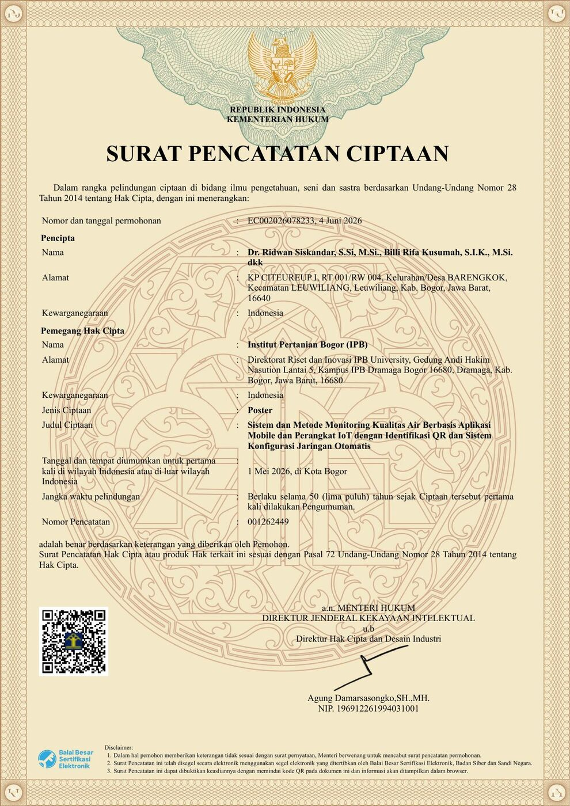
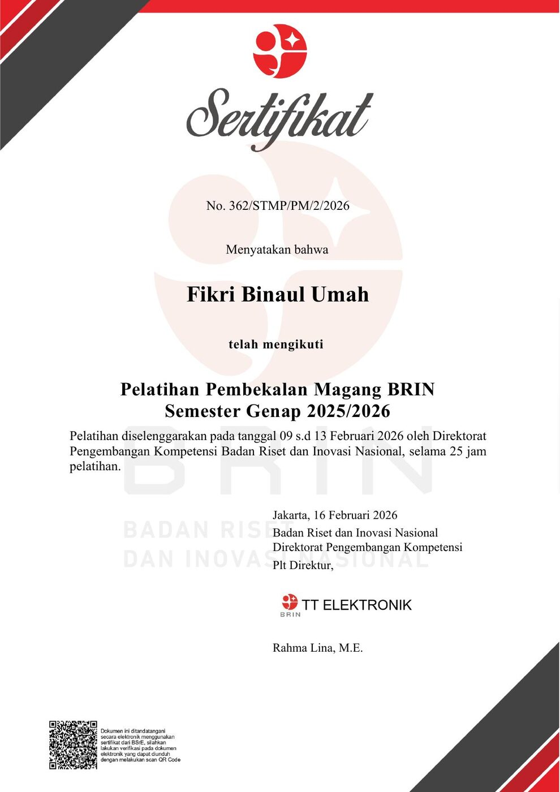
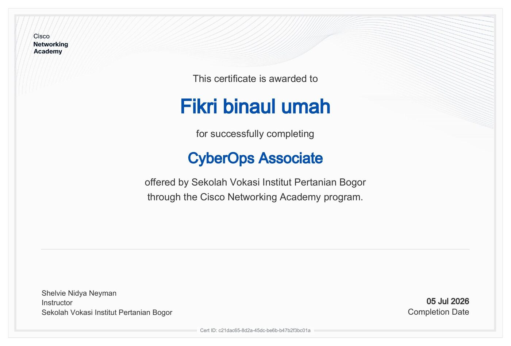
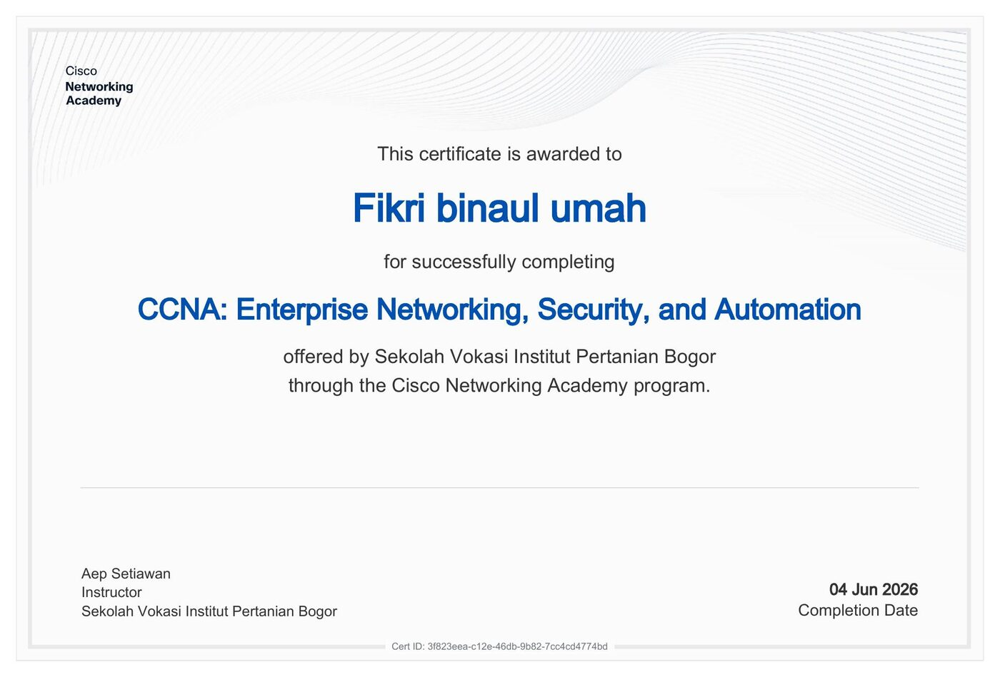
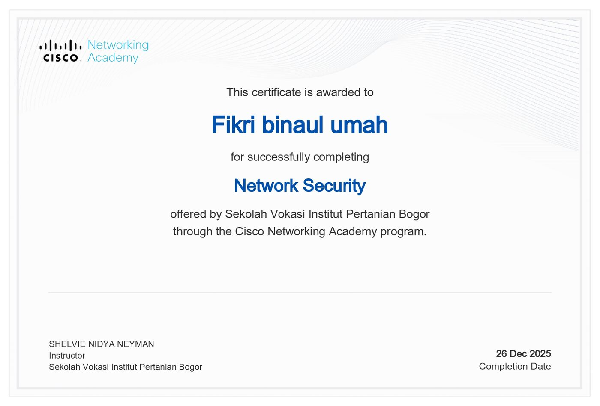
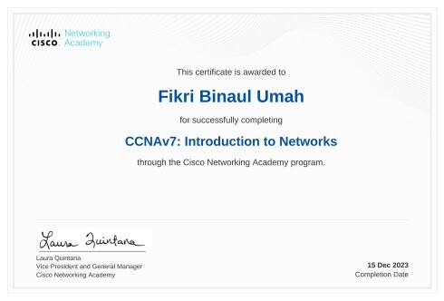
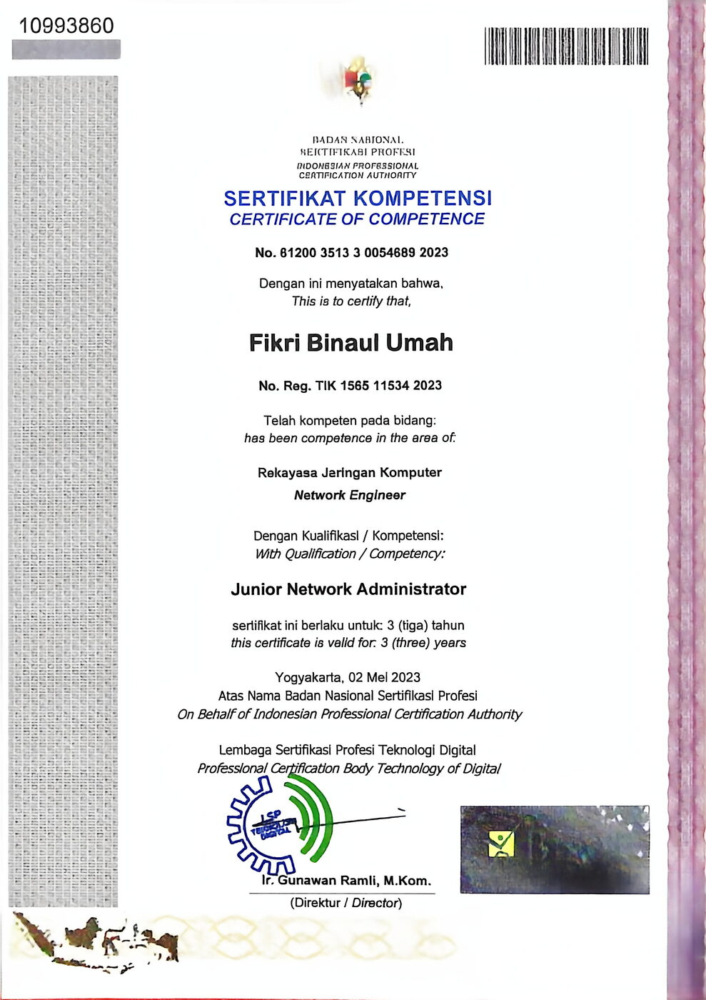
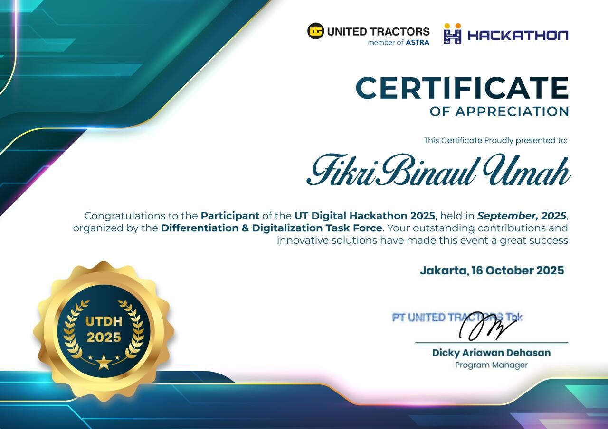
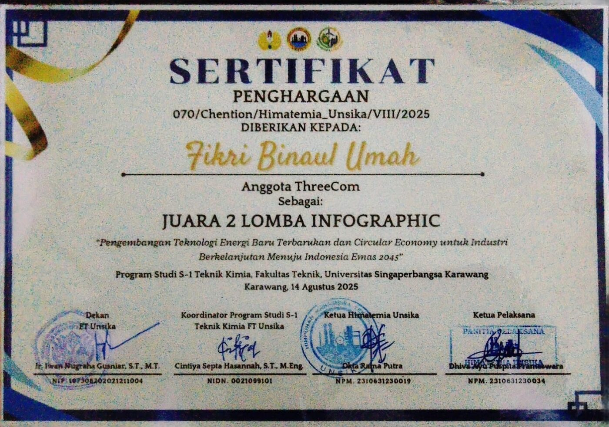
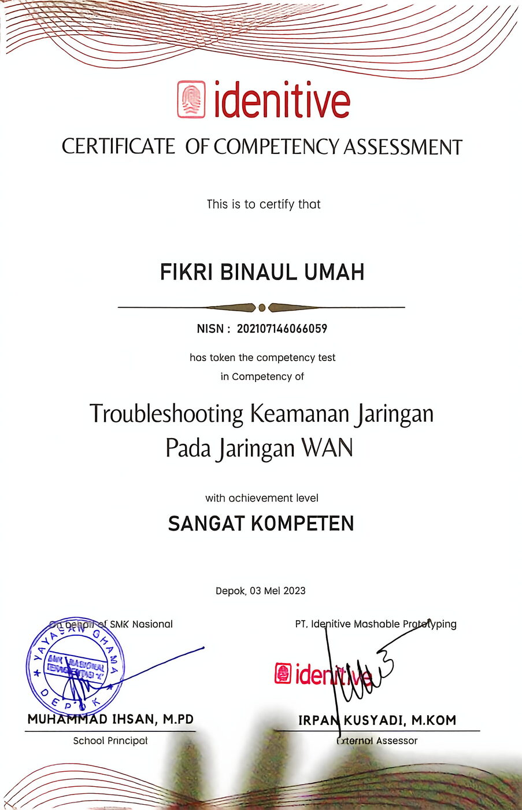
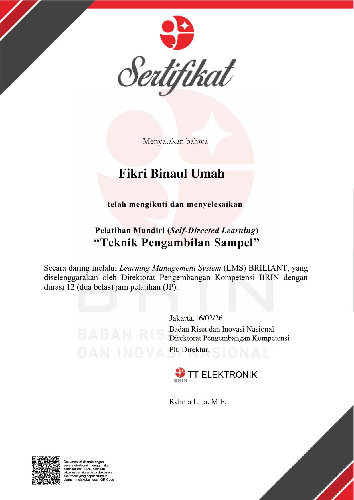
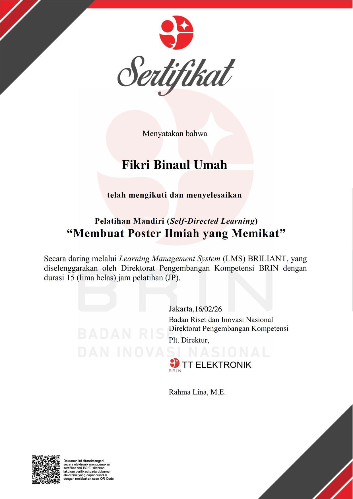
Led the organization through two years of expeditions and operations — setting objectives, delegating across teams, and staying accountable for outcomes in the field.
Coordinated logistics for multi-day expeditions: routes, equipment, safety protocol, and contingency planning where a missed detail has real consequences.
Built the communication discipline that made a volunteer team function like a unit — clear briefings, fast decisions, and a culture where every member knew the plan.


Let's build the future together.
Open to research collaborations, embedded/IoT engineering roles, and teams building intelligent hardware.